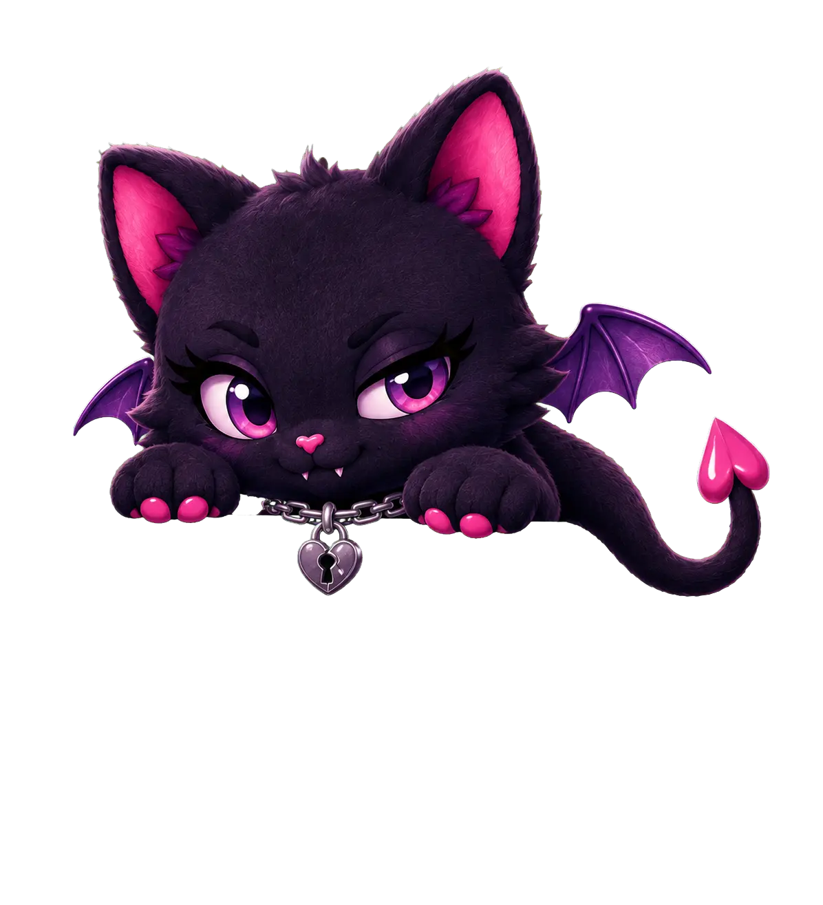
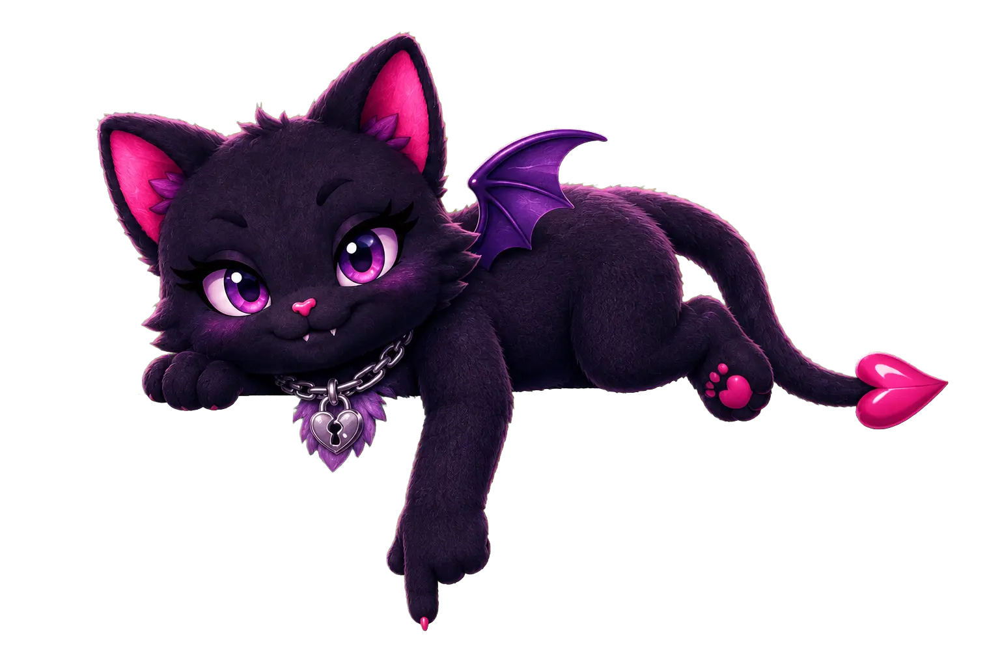
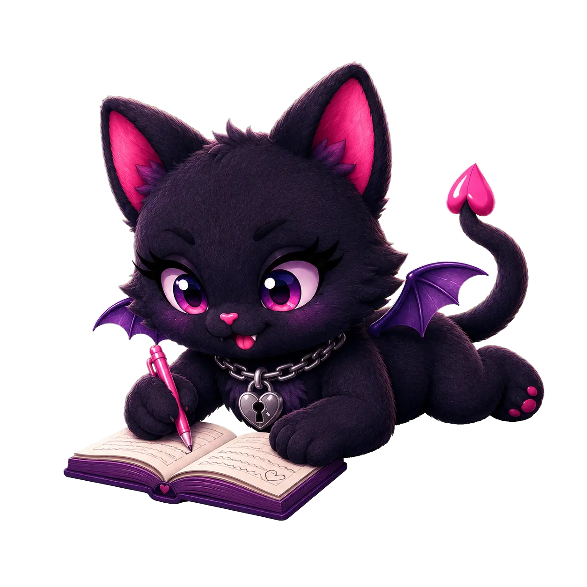
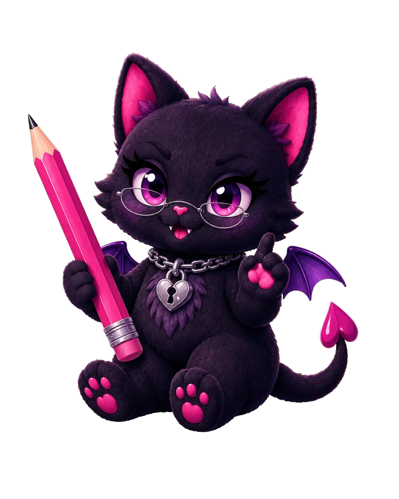
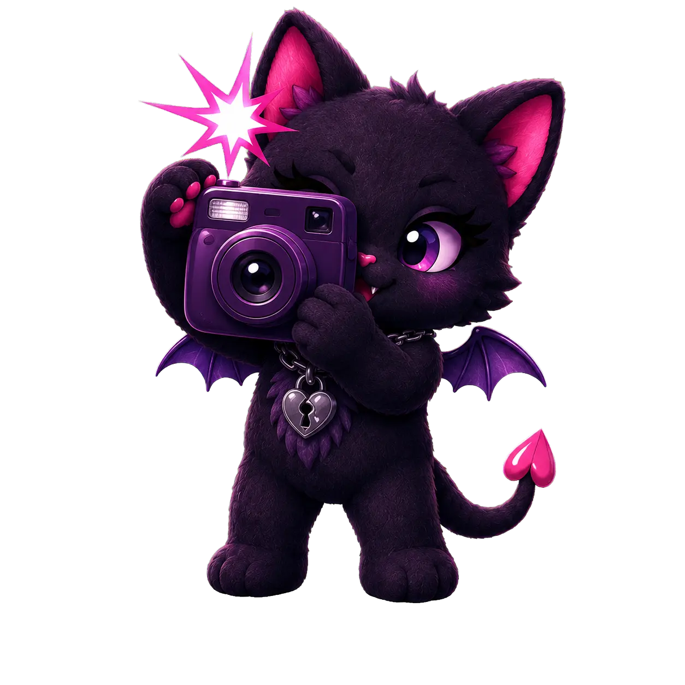

Candy-coated queer menace
Soft hearts.
Sharp teeth.
Sapphic chaos, queer stories, and enough yearning to power a small city. Occasionally hetero. Regrettably.
Explore the chaos ↓Choose a door
A bedroom with more rooms.
The profile has grown into a full creator hub. Browse finished work, spy on projects in development, steal a useful tutorial, or inspect the visual evidence.

✦Scenarios
Published stories from FictionLab and HereHaven, organized by platform, genre, relationship type, universe, and newest first.
Browse the projects →
◇The Closet Door
Come out. Planned scenarios, character previews, progress reports, and suspicious visual clues now live inside Scenarios.
Peek at what is coming →
☾Development Diary
Short project-by-project notes from inside the creative process.
Read the notes →
✎Creation Tutorials
Practical FictionLab guides for premises, casts, memory, testing, and polish.
Enter the classroom →
◉Flash! Camera! Gay!
Covers, banners, character art, moodboards, concepts, and beautiful casualties.
View the evidence →